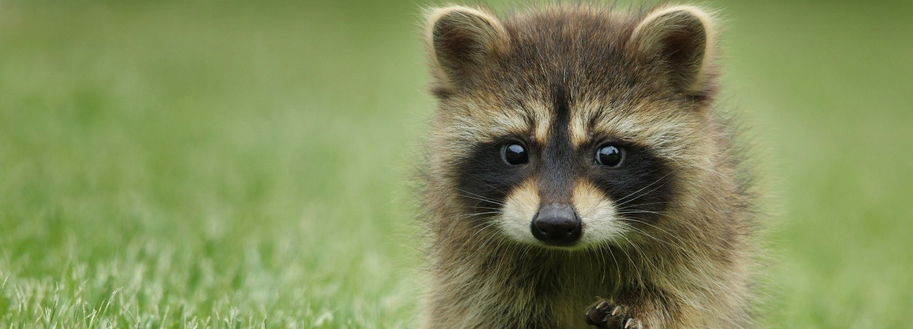
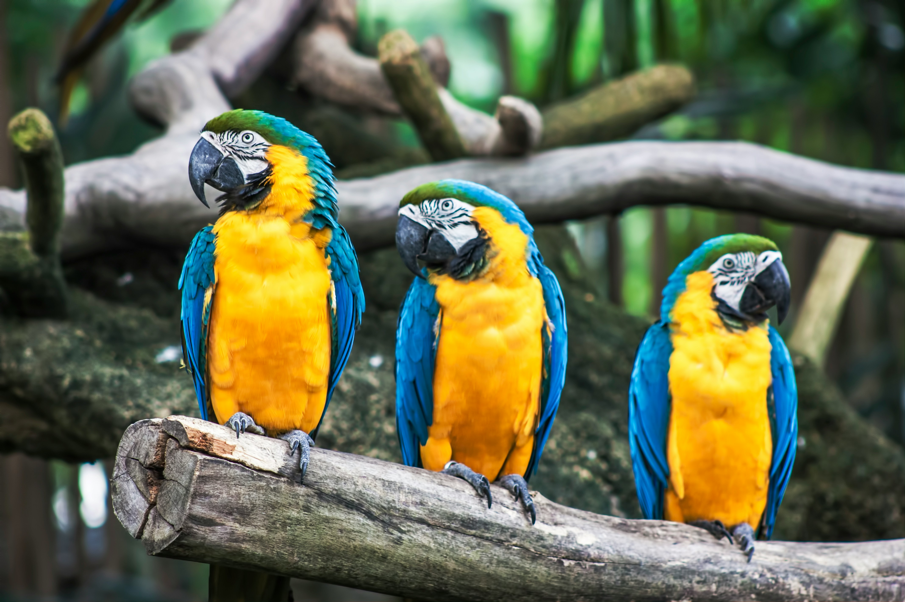
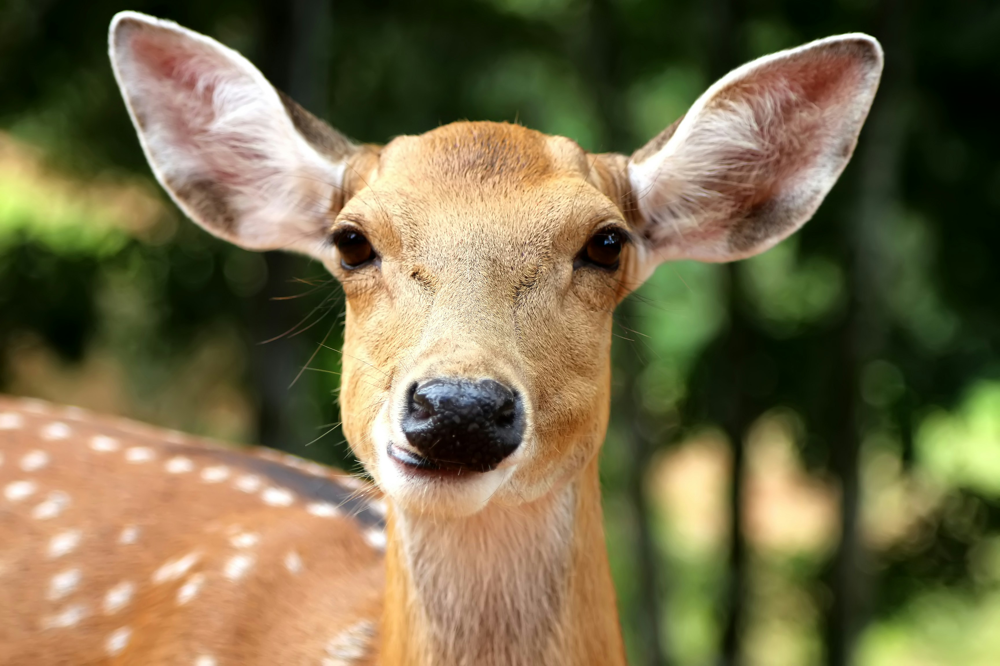

Animals And Lifestyles
Wildlife enthusiast? Capturing images of wild animals in their natural habitat is quite a hobby, isn't it?
Observing their lifestyles, from foraging to socializing, is always captivating. Each species has its unique routines and habits,
whether it's the majestic lions of the savannah or the elusive creatures of the rainforest.
From hunting for food to caring for their young, wild animals lead diverse lives that showcase the wonders of nature.
So, next time you're out with your camera, take a moment to observe the incredible diversity of lifestyles. You never know what fascinating behavior you might capture on film!
For now, let's have a closer look into the wild and appreciate the fascinating behaviors of the creatures around us!

Bird Wonders
Birds are amazing creatures, showing off their unique wonders in the wild. From their colorful feathers to their skillful nest-building, they never cease to amaze us.
Migration is like a big adventure, with birds flying thousands of miles together in perfect sync. And their songs? They're like nature's own music, adding a special touch to the great outdoors.
But birds do more than just look pretty and sing sweetly. They're also busy little helpers, pollinating flowers and keeping pesky insects in check. They're like the superheroes of the ecosystem!
Next time you're out exploring nature, take a moment to appreciate the wonders of birds and all the joy they bring to our world.
Explore more

Herbivore Haven
Herbivores are super cool animals that live in their own chill paradise in the wild. From elegant deer to towering giraffes, they're all about munching on plants and living in harmony with nature.
Picture this: a bunch of herbivores hanging out together, munching on greens like it's no big deal. It's like a peaceful picnic in the wild!
But these guys aren't just cute—they're also essential for keeping the environment in tip-top shape. By chomping on plants, they help keep things balanced and create homes for other critters.
Next time you're in a place full of herbivores, take a sec to soak in the beauty and calmness of these laid-back animals and the awesome role they play in nature.
Explore more

Carnivore Adventures
Carnivores are the wild's thrill-seekers, always hunting for their next adventure. From mighty lions to stealthy wolves, they rule with strength and cunning.
Imagine trekking through the jungle with a pack of carnivores, anticipation in their eyes as they track prey. It's like a real-life safari, each hunt packed with excitement.
But carnivores aren't just about the chase—they're vital for balancing ecosystems. By hunting and managing prey populations, they keep the circle of life spinning.
So, on your next carnivore adventure, admire the raw power and beauty of these top predators and the wild they call home. It will be an unforgettable journey!
Explore more